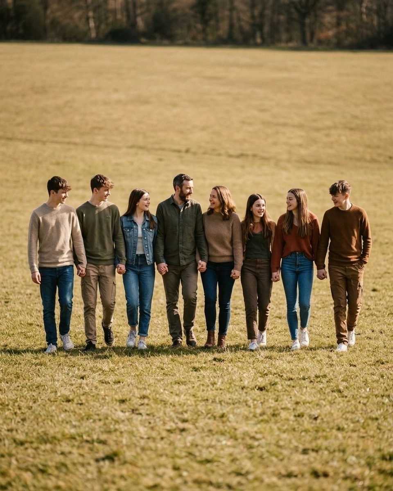
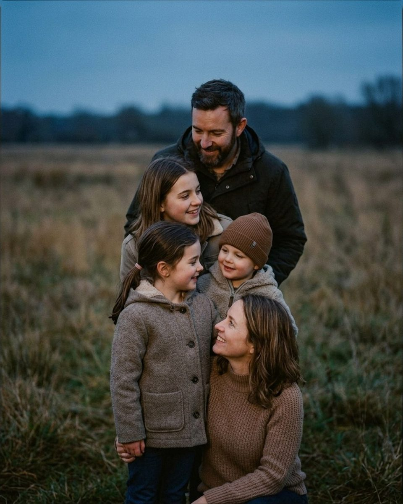
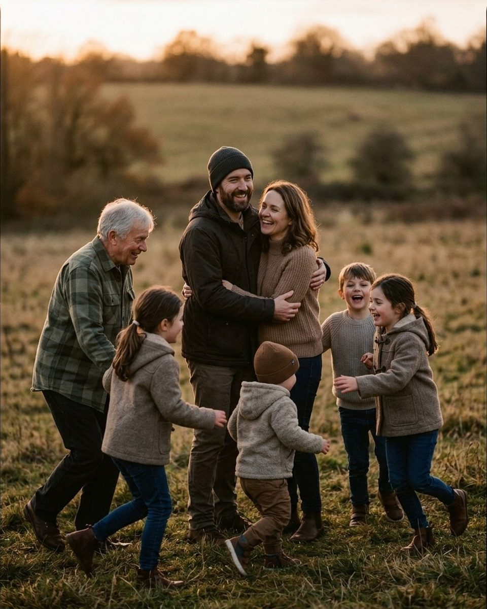
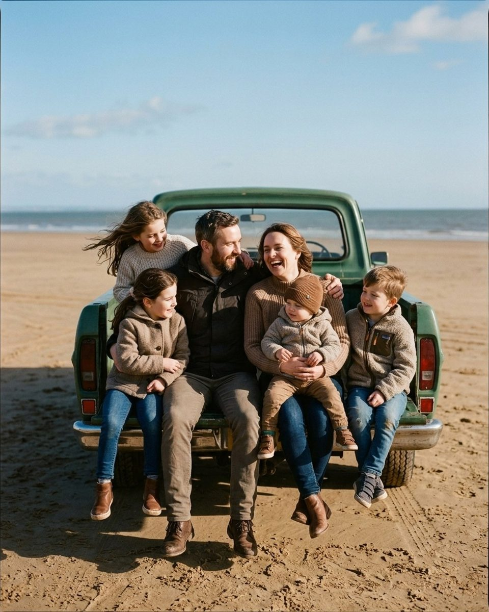
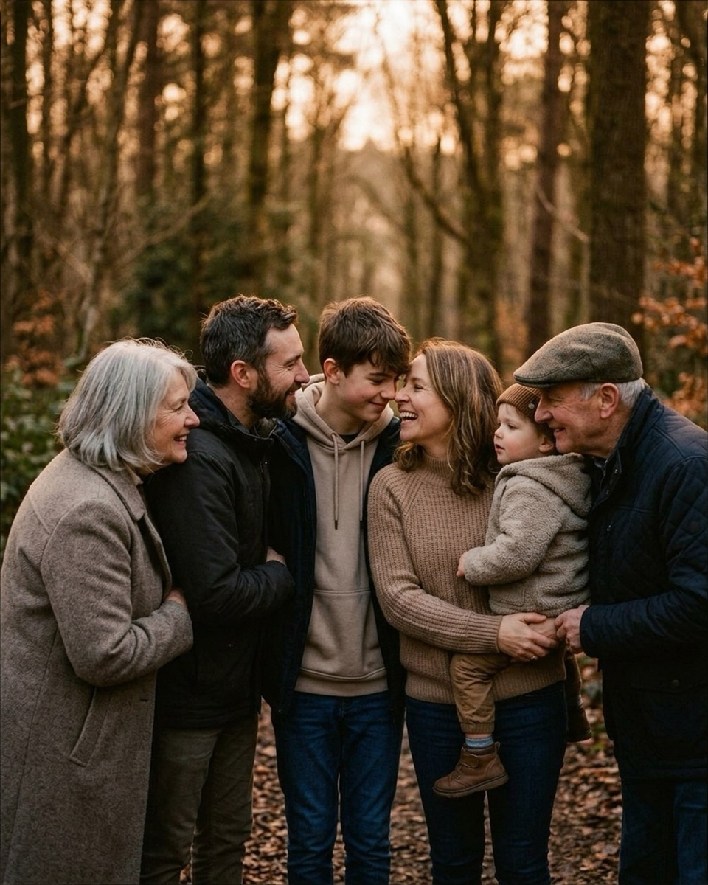
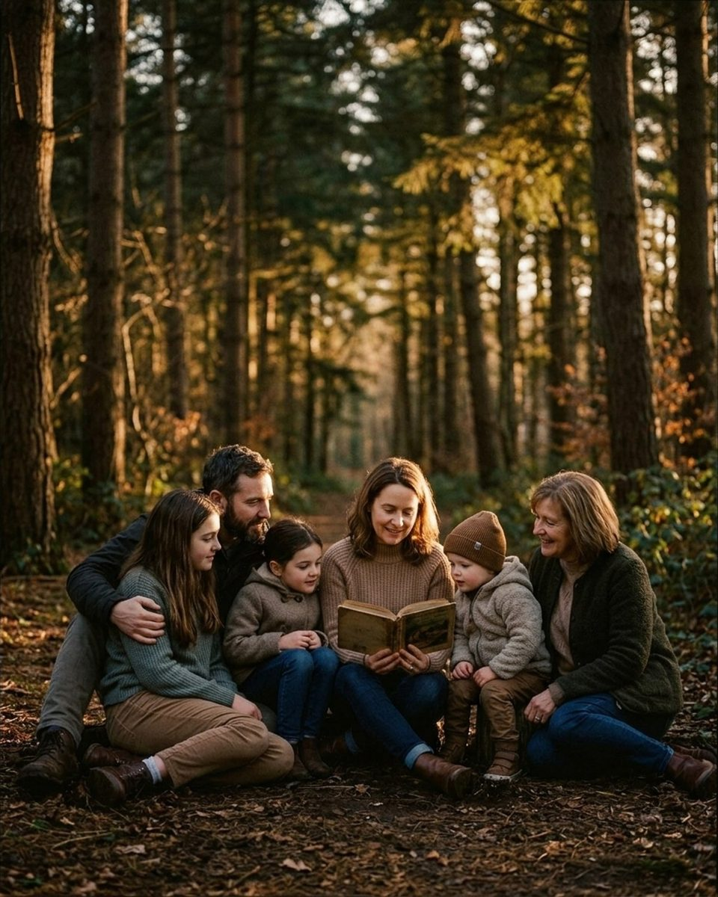
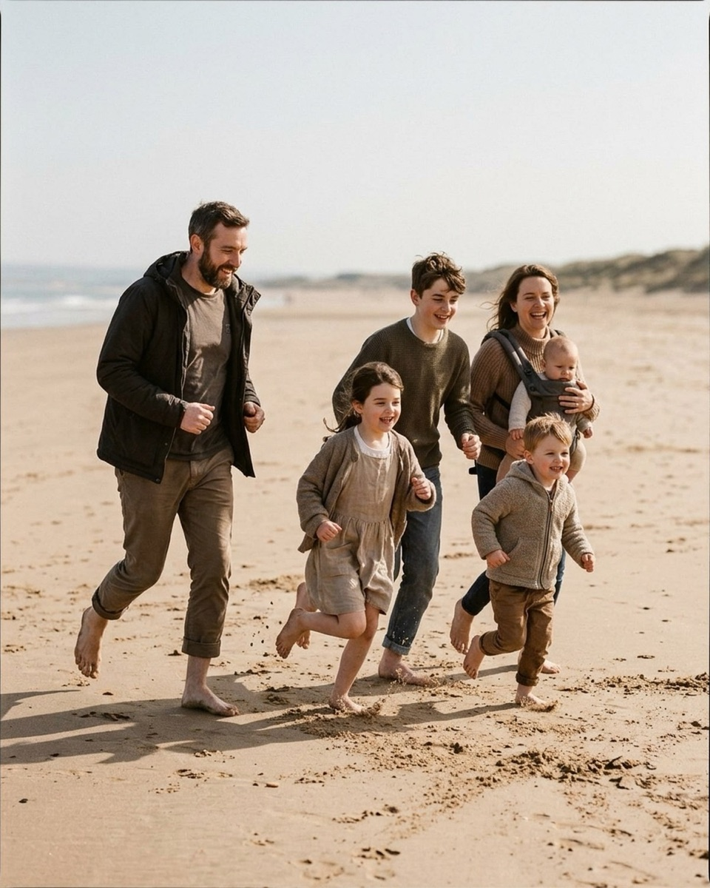
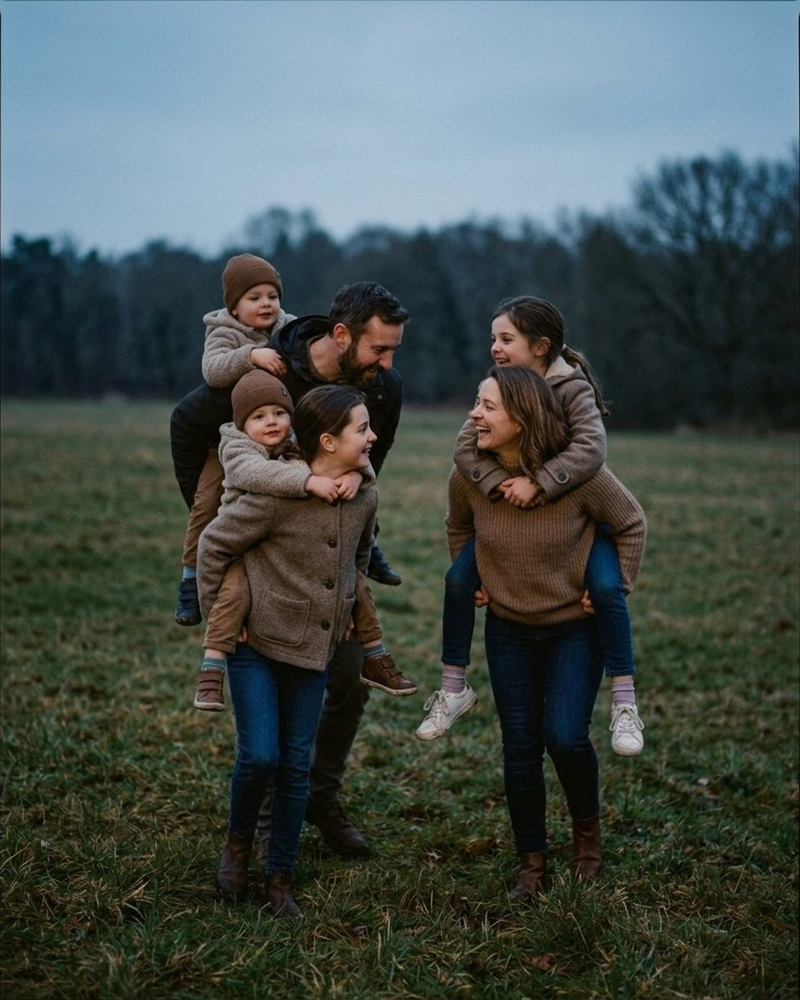

Posing an extended family of ten or more
Ten people is a different job from five. Eight poses built as units you can stack, with the words to say and the order to shoot them in.
Ten people is a different job from five. Below about eight you are arranging individuals, and the frame holds because you placed every person in it. Past ten you cannot work that way and still have light left: the people you posed first come apart before you reach the end of the row. A group of twelve has to be built out of units — clusters you can set quickly, each holding its own shape. The catalog's largest frames are built for five to seven people, so none is a twelve-person pose; what they are is a set of five- and six-person shapes that stack, plus two whole-group arrangements that scale as far as you can fit bodies in the frame. The references are AI-generated posing scaffolds rather than photographs of real families, and real large-group frames are among the first things being added through the contributor program.
Shoot the whole-group frame first
The frame the family is paying for is the one with everybody in it, and it degrades fastest. Get it in the first ten minutes, then spend the rest of the session on the clusters. Two shapes scale past seven without needing a new idea: a line that walks, and a stack that uses depth instead of width.
Group walk, hold hands, field

The catalog writes this as a single horizontal row, parents in the centre flanked by their children, everyone holding the hand of whoever is next to them with arms relaxed and down, the line walking slowly forward at one steady pace. Its own instructions describe eight bodies, and it keeps working as you add more: a row of twelve holding hands reads as one family in a way that a row of twelve standing still never does. Two things break it. If the line is wider than your lens, curve the ends forward into a shallow arc so the outer people stay in focus. And if everyone looks at the lens at once you have a school photo, so send the parents' eyes to each other while each sibling deals with their neighbour.
You handle the hugging. I'll handle the timing.
Nervous clientFrom the pose "Group walk hold hands field"
Say this to the adults before the first take, when somebody asks how to hold their hands. You cannot direct limbs individually at this size, and the line is better if they manage each other than wait on you.
Everyone point at the person most likely to steal dessert.
PlayfulFrom the pose "Group walk hold hands field"
Use it on the second or third pass, once the walk has gone mechanical. It gives twelve people one thing to do at the same moment and sends the heads in different directions, which keeps a long row alive.
Stair stack, field

Built for five, and the most useful shape here for a bigger group, because it is the only one that solves the width problem. The catalog puts the father standing centrally at the back and the mother kneeling in the lower right foreground, the three children clustered tightly between them. That is depth, not a row. Scale it by adding tiers rather than widening: tallest adults at the back, a band of teenagers and older children, a kneeling band at the front, the smallest sitting on the grass. Four tiers of three fits twelve people into roughly the width of five. Keep the faces offset so no head sits directly behind another, and send everyone's eyes down and inward as the catalog does.
Everyone squish in until somebody giggles.
Nervous clientFrom the pose "Stair stack field"
The right line while you are still assembling the tiers. It gives the group a target they can feel rather than a position to understand, and closes the gaps that open every time somebody shuffles.
Tuck the smallest one into the middle and let them get cozy.
CalmFrom the pose "Stair stack field"
Use it to place the youngest child once the adult tiers are set. A toddler in the middle of a stack is held on all sides, which buys more cooperation than a toddler on the end.
Want the fall mini session shot list?
About 25 poses grouped by family size, each with the words to say. Free PDF.
One email to confirm, one with the PDF. Unsubscribe any time.
Build the group out of five- and six-person units
Once the whole-group frame is safe, stop photographing the group. The frames the family will actually print are the smaller ones: each household, the grandparents with their own children, the cousins. It is also the only way to keep a session this size moving: a cluster of five can be set in a minute while the other seven stand aside and talk. If weather has driven you indoors, the window light guide covers working a single window.
Ring around parents, field

The parents anchor the centre in a loose embrace, facing each other and laughing. The grandfather comes in from the left in mid-stride, his attention on the children. The older children move around the parents: one girl running in from the left, another stepping in from the far right with her hands outstretched, a boy behind her laughing. The toddler is in the centre foreground, back mostly to camera, mid-step. The reason to reach for this one at an extended-family session is the grandfather: it is among the few poses that give an older relative something to do other than stand at the edge of a frame. Everyone except the parents is moving, which makes it tolerant — nobody has a mark to hit, and you shoot a burst while the convergence happens.
Mom, Dad — look at each other. The kids will do the rest, I promise.
Nervous clientFrom the pose "Ring around parents field"
The pose depends on the couple at the centre being absorbed in each other while everything converges on them. Say this, then stop talking to them: keep directing the parents and they will keep checking in with you.
One quiet minute, all together. I'll take care of the rest.
CalmFrom the pose "Ring around parents field"
Good for the frame immediately after the hug lands, when everyone has arrived and is still touching. It also resets a group this size after a loud take.
Tailgate sit, beach

The parents sit side by side in the centre of a lowered tailgate with their legs dangling, angled inward and laughing. The toddler sits on the mother's lap facing forward, her arms around his waist. The younger daughter leans in against the father's right side, the eldest daughter stands in the truck bed behind them leaning over his shoulder, and the young boy takes the far-right edge, torso turned inward. The truck bed is the part that matters for a bigger group: it is a second tier, so four more people can stand in it behind the seated row. A tailgate is the most useful prop at a session this size for that reason — it fixes the height of every seated person, which is otherwise what you spend ten minutes negotiating.
If someone cries, we take a snack break. That includes the adults.
Nervous clientFrom the pose "Tailgate sit beach"
Worth saying out loud early in any session with this many small children. It lowers the stakes for the parents, who are usually more worried about their child's behaviour than about how they look.
Kids, on three, show me your silliest monster face. Parents, act terrified.
PlayfulFrom the pose "Tailgate sit beach"
Gives the children and the adults different jobs at the same moment, so nobody is wearing the same held smile. Useful once the seated row has settled and needs an event.
Three generations, and where to put the oldest people
An extended family nearly always means grandparents, and the standard mistake is to leave them standing on grass at the edge of a group for forty minutes. Two of the catalog's largest poses arrange everyone in toward an older relative, which solves comfort and composition at once: the oldest person becomes the anchor, and an anchor is what a group of ten needs most. Ask before you put anyone on the ground, and offer a chair or a tailgate instead.
Nose boop line, forest

A tight, shallow semi-circle facing inward. The teenage son and the mother hold the centre, angled toward one another, the mother carrying the toddler upright on her left hip. The father stands to the teen's left in profile. The grandmother takes the far left, turned inward with her hand on the father's arm, and the grandfather the far right, leaning in toward the toddler. Everyone packs shoulder to shoulder and looks inward rather than at the camera. Three generations' worth of height difference, and the semi-circle is what makes it work: a curve holds twelve people at a consistent distance from the lens, which a straight line cannot. Both grandparents are standing here, so keep it short, or use the seated version below.
We'll get one photo where everyone smiles at me for Grandma. Then we play. Deal?
Nervous clientFrom the pose "Nose boop line forest"
Possibly the most useful sentence in the catalog for a group this size, because it is the deal everybody already wants. Say it at the start of the whole-group frame and honour it.
Cuddle up like it's the end of movie night.
CalmFrom the pose "Nose boop line forest"
Use it to close the semi-circle. It describes the physical register you are after — leaning, tired, comfortable — without asking anyone to produce an expression.
Story time circle, forest

The seated three-generation frame. The mother sits centrally on the forest ground holding an open book upright in her lap, looking down as if reading aloud. The toddler sits against her left side looking at the pages, the grandmother on the far right leaning in toward both. The younger daughter tucks against the mother's right side, the older daughter sits sideways on the far left, and the father sits behind her with his arm around her shoulder. Every pair of eyes turns in toward the storybook, and the book is doing the real work. A group of ten given something to look at arranges itself around that thing and keeps looking long enough for you to move; a group given no focal point looks at you and waits. Almost any object does it: a book, a baby, a phone with a photograph on it.
Everyone find somewhere comfortable to lean on someone else.
CalmFrom the pose "Story time circle forest"
The instruction that builds this pose without you placing eleven people by hand. Say it, let the group sort itself out, then correct the two or three positions that are wrong.
Parents kiss. Kids, say ewww as loud as legally allowed.
PlayfulFrom the pose "Story time circle forest"
Breaks a seated circle open at the end of the set. With cousins in the group the reaction is louder than it is in a single household, which is the point of using it here.
Movement, once the holding still is finished
There is a point in a long session with a big family when no further still frames are available, and everybody recognises it. Move the group instead: a run and a carry put the energy that is wrecking your composed frames inside the picture.
Field run

Despite the name, the catalog stages this one barefoot on an open beach, in a loose staggered group moving diagonally toward the camera. The father is on the far left, jogging with a slight forward lean, head turned in to his children. The mother is on the far right with an infant in a front carrier. The teenage son runs centre rear and the two young children fill the front gaps. Staggered and diagonal is the instruction to keep: a straight line of ten people running at you puts four out of focus and two into each other, while a diagonal gives everyone room.
Pretend it's Sunday morning and nobody has anywhere to be.
Nervous clientFrom the pose "Field run"
Say this before the first run to set the pace, which wants to be a jog rather than a sprint. Groups told simply to run tend to race each other, and the frame turns into a competition.
Tallest to smallest, then everyone lean out and peek at me.
PlayfulFrom the pose "Field run"
A good line for the frame straight after the run, when everyone is breathing hard and loose. With a wide height spread it also staggers the group on its own.
Piggyback parade

The mother and the older daughter walk slowly forward side by side across a grassy field. The mother carries a young daughter piggyback, the two of them turning to look at each other and laugh. The older daughter carries a toddler, who holds her shoulders from behind, and the father walks behind her with the second toddler high on his back. Six people, three of them carried. This is the pose that solves small children in a large group: a carried child is in the frame, at adult head height, and not running out of it. Scale it by adding carriers — a line of five walking carriers beats any arrangement of the same people standing.
Parents, you're just furniture right now. Comfortable, loving furniture.
Nervous clientFrom the pose "Piggyback parade"
Exactly right for a carry. The adults' job is to stay stable and react to the child on their back, and naming that stops them trying to pose at the same time.
Watch the water together. Nobody needs to say anything.
CalmFrom the pose "Piggyback parade"
Use it at the end of the parade, when the line has stopped and everyone is still carrying somebody. Point it at whatever is in front of the group if there is no water.
The running order for a group this size
Work in this order and a twelve-person session fits inside an hour. Whole-group frame first, in the first ten minutes: the walk, then the stack, both in bursts. Then the clusters, one household at a time, with everybody else sent twenty feet away to talk among themselves — a family watching their own relatives being photographed is the biggest cause of stiff frames at this size. Three-generation frames next, while the grandparents still have the legs for it. Movement last, when the stillness has run out anyway. Count heads before every whole-group take, out loud, because in a group of twelve somebody is missing from more frames than you would believe. And shoot far more of the first frame than you think you need: it ends up on four different walls, and with twelve faces the odds that all twelve are good in one exposure are not in your favour.
The Fall Mini Session Shot List
About 25 poses grouped by family size, each with the words to say. A free PDF, sent once you confirm your address.
One email to confirm, one with the PDF. Unsubscribe any time. No selling, no sharing.
Every prompt in this guide is in the app, with the pose it belongs to.
Prompted is the posing app that is only a posing app: 250+ poses, each with word-for-word prompts in four tones, filtered to the light you're standing in. The sun tracker is free forever.
Get Prompted on the App Store